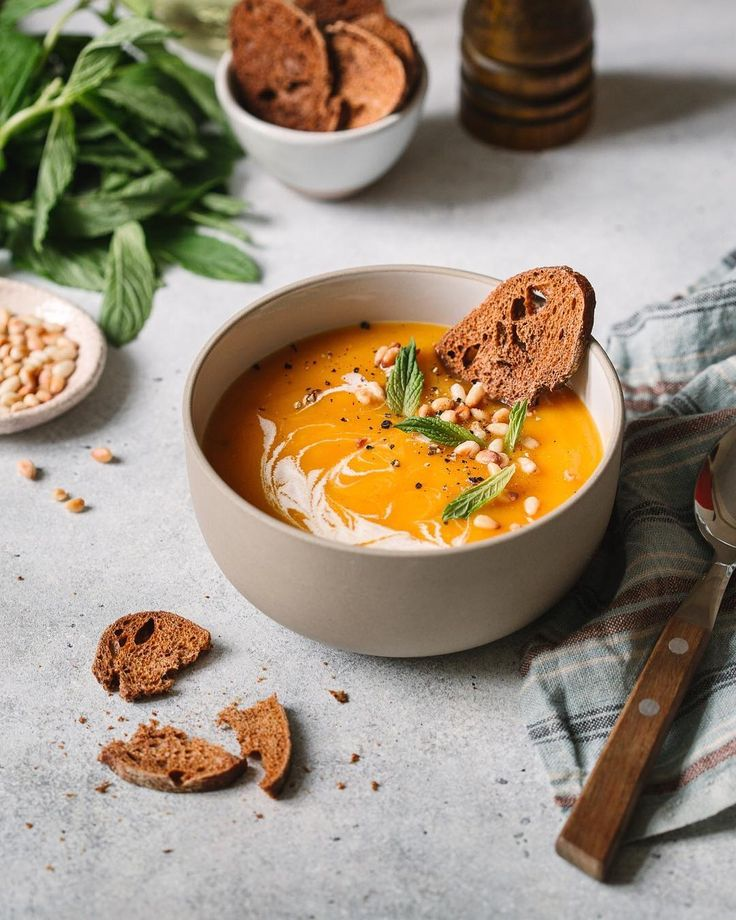

Тыквенный суп
Ингредиенты:
- Тыква - 800 г
- Лук - 1 шт
- Чеснок - 2 зубчика
- Кокосовое молоко - 200 мл
- Имбирь - 20 г
- Овощной бульон - 500 мл
Приготовление:
- Обжарьте лук и чеснок
- Добавьте тыкву и имбирь
- Влейте бульон и варите 20 минут
- Пюрируйте блендером, добавьте кокосовое молоко